00读前一分钟 · 全文脉络（做完题再看也行）
⭐⭐⭐ 这是一篇「谁管谁」的社论：全文就是一张权力关系图——国会（能授权）、FCC（该管却不管）、法院（只按先例判）、各州（想管、被 FCC 拦）、宽带商（该被管）、其他部门（FCC 说它们会管）。五道题各问图上一个主体：
| 主体 | 在文中做了什么 | 作者的评价 | 题 |
|---|---|---|---|
| 宽带商 | 有能力也有动机偏袒自家网站（①❶） | 该被管 | 36A |
| FCC | 废规则 · 否认自己的权力 · 不许各州管（②❹❺） | 撂挑子（⑤❷ abdication） | 37D |
| AT&T（宽带商的一员） | 牺牲对手、偏袒自家流媒体（③❶ 的例子） | 反竞争 | 38D |
| 上诉法院 · 米利特法官 | 法院照先例维持（④❶）；法官说结果脱离现实（④❷） | 法官说得对（rightly） | 39B |
| 各州 | 想立法；FCC 只剩逐个否决的权力（⑤） | 官司还会更多 | （无题；养活 37B） |
| 国会 | 应当明确授权 FCC、立规则（⑥） | 全文的出路 | 40C |
favor affiliated websites over their rivals’ 和 ⑥❷ 的 meddling in the traffic on their network 说的是同一件事——首段用具体行为写担忧，末段用概括说法写对策。36 题问首段的担忧，C 偏偏借了末段的说法（新卡 R306）。▸ 2020 T1 归 → T2 账 → T3 驳 → T4 时 → 2021 T1 让 → T2 证 → T3 因 → T4 管：T1 是评论（问作者站哪），T2 是报道（问证据支持谁），T3 是解释文（问原因表的哪一格），T4 是社论（问权力图上谁做了什么）——同一套卷子四篇四种读法。
▸ 一根线从头走到尾：「规则」的词族——rules（①❷）→ resolution（②❷）→ order · rules · authority（②❸❹）→ regulate（②❺）→ deregulating · deregulatory（④❶）→ internet regulation（④❷）→ state rules · state laws · its order（⑤❶）→ law（⑤❷）→ explicit authority · clear rules（⑥❷）。前五段的规则一路被废、被拦、被拖；末段才第一次出现 explicit、clear 两个形容词——作者要的不是更多规则，是明确的规则。
00+读前背景 · 十个专名与事实（常识只帮读，不帮选——你知道网络中立是保护开放的，40D「多样化」照样是错的；你知道法官常批评判决，39A「模棱两可」照样没出处）
本篇是《洛杉矶时报》2019 年 10 月 2 日的一篇社论（据黄皮书），作者代表报社表态：badly needed（急需）· only prolonged（只是拖延）· rightly argued（说得对）· abdication（撂挑子）· cry out for（亟需）——评价词一路贴在主体身上，立场从头到尾没变：支持网络中立，批评 FCC 去监管。所以 40 题问作者的主张，直接取末段的建议。
| 专名 / 事实 | 是什么 | 在本文里的作用 |
|---|---|---|
| net neutrality（网络中立） | 宽带商对网上所有数据一视同仁：不按来源、内容给某些网站加速、给另一些减速或屏蔽 | ⭐⭐⭐ 全文的核心概念，但原文没给定义——定义就是①❶❷：不许偏袒关联网站、不许「挑赢家和输家」 |
| broadband providers（宽带运营商） | 原文①❶ 写作 the cable and phone companies selling broadband connections（卖宽带连接的有线电视和电话公司） | ⭐⭐ 同一个主体换了说法：①❶ 长说法 → ①❷ 起统一叫 broadband providers（黄皮书：两者同指） |
| FCC（联邦通信委员会） | 美国管电信、广播的联邦机构，委员会多数随执政党变化；文中也叫 the commission | ⭐⭐⭐ 监管者——2015 年民主党多数时立了严格规则，2017 年共和党多数时废掉（②❹） |
| US Court of Appeals for the D.C. Circuit（哥伦比亚特区巡回上诉法院） | 美国联邦上诉法院之一，专门审很多联邦机构的规章 | ②❷❸ ④ ⑤——文中的 a federal appeals court ＝ the appeals court ＝ the court，一个法院三种叫法 |
| Mozilla Corp. v. FCC | 2019 年 10 月 1 日（周二）判决：维持 FCC 的去监管命令，推翻它对州法的一揽子优先适用（WebSearch 核） | ⭐⭐ ④⑤ 就是这一个判决的两半：维持（④）＋ 推翻（⑤） |
| Supreme Court ruling from 2005 | 最高法院 NCTA v. Brand X 案：承认 FCC 有权把宽带归为受管较松的「信息服务」 | ④❶ ⭐⭐ 上诉法院援引它判案 ⟹ 新判决与旧裁决一致 ⟹ 39C「与此前裁决不一致」说反了 |
| Judge Patricia Millett（米利特法官）· concurring opinion（协同意见） | 协同意见＝同意判决结果、但另写理由的法官意见书；米利特受先例约束投了赞成票，却另写一份表达不满 | ⭐⭐⭐ 39 题：她同意结果却批评结果——这不矛盾，是在说「先例逼我这么判，但先例过时了」；作者用 rightly 站她一边 |
| AT&T · Netflix · Apple TV | AT&T 是美国电信巨头，既卖宽带也有自家视频服务；Netflix、Apple TV 是独立的流媒体服务 | ③❶ ⭐⭐⭐ 38 题：AT&T 是「宽带商偏袒自家」的样本——它既是修路的，又在路上跑车 |
| data caps（流量上限） | 宽带商给用户每月流量设上限；若对自家流媒体不计流量（俗称「零费率」）、对对手计流量，就是变相偏袒 | ③❷ ⭐⭐ FCC 叫停的正是对这种做法的调查——言行不一的证据 |
| Justice Department vs California（司法部 vs 加州） | 加州 2018 年通过严格的网络中立法，联邦司法部随即起诉；2021 年 2 月撤诉（WebSearch 核） | ⑤❷ ⭐ 「联邦 vs 州」的例子；Congress（国会）是⑥唯一能一劳永逸解决的主体——后话：2025 年 1 月法院再次撤销 FCC 的网络中立规则，仍说要国会明确授权 |
▸ 该用的：知道 FCC 是监管者、宽带商是被管者，40B「FCC 应受严格监管」一眼就是主宾颠倒；知道协同意见是「同意结果、另写理由」，就不会被 39 题里「她到底支持还是反对判决」绕晕；知道 AT&T 既卖宽带又有流媒体，38 题的例子就读得懂。
▸ 不该用的：你知道网络中立让网上服务百花齐放，会觉得 40D「让线上服务多样化」也行——可原文的目标词是 openness and innovation；你知道美国的去监管派常说「保护企业权利」，会觉得 40A 有出处——可那是作者反对的一方；你知道 2015 年的规则后来又被恢复过，会觉得 37A「坚守过时命令」像真的——可原文说的是 FCC 废了旧规则。
🔗 跨篇（站内已有篇目）：
▸ 2021 T1《火车票价》／T2《给穷人发钱也救了森林》／T3《维多利亚人拍照为何不笑》：同一套卷子前三篇。T1 问「让—转」的哪一侧，T2 问「哪条证据支持谁」，T3 问「原因表的哪一格」，T4 问「权力图上谁做了什么」——四篇的共同点仍是答案在一张表里，干扰项把料挪到隔壁格；T4 的「格」是主体。
▸ 2013 T4《移民法判决的两块比分牌》：同是「法院判决 ＋ 联邦与州之争」——那篇最高法院一边推翻亚利桑那州移民法的多数条款、一边保留了最受争议的一条（老卡 R152 两块比分牌）；本篇⑤ 也是「推翻一刀切、保留逐个否决」。读判决新闻，先把每个「维持／推翻」写成一行比分。
01原文精读 · 全文六段（本机识别成文字 · 可切回原卷）
📄 原文由你的浏览器从原卷第 9 页识别成文字（每句末尾「原卷」可切回扫描图，「校对」可改错字）｜ 选中任意单词弹「查有道」（触屏长按选词；切回原卷后在扫描图上点词也能查）｜ 每句下方「↘ 跳到长难句精析」按钮跳 03 节（只有 ②❺ 一句 14 词的短句不跳）｜ 虚线词 ＝ 本句重难点词，点开出卡片（正文里没认出来的才留在下面 🟡 行） ｜ 每段「意」= 该段意译（按句意转述，非逐字翻译）
① 需求：人们早就担心宽带商偏袒自家网站，所以一直要求立规矩
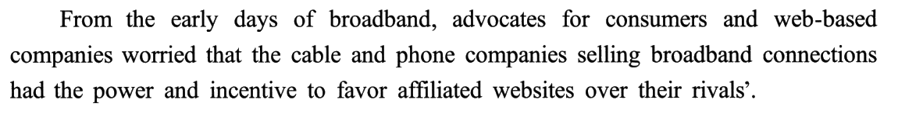
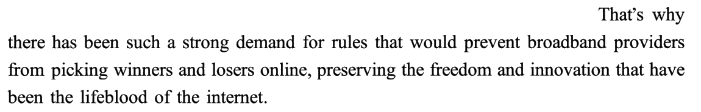
| 句 | 担心／要求的对象 | 说法 | 养活的选项 |
|---|---|---|---|
| ❶ | 卖宽带的公司（＝ 宽带商） | favor affiliated websites over their rivals’（具体：偏袒 A、亏待 B） | 36A ✔ · 36B（web-based companies）· 36D（rivals） |
| ❷ | 宽带商 | picking winners and losers online（比喻：替市场挑胜负） | 36A ✔（同一件事的比喻说法） |
| ❷ | 互联网 | the freedom and innovation（要守住的东西） | 40D（innovation → diversify） |
advocates for consumers and web-based companies（替消费者和网络公司说话的人）——网络公司是受害者一方。36B 把 web-based firms 换成被控制的对象，倒也没换错边；错在 bring … under control 太重：原文只是偏袒，不是控制（黄皮书：夸大）。⭐ clients（客户）是谁：宽带商的客户既有消费者，也有在它网上跑的网站——36A 的 clients 把「关联网站」和「对手网站」都装进去了，show partiality in treating clients ＝ 对这些客户厚此薄彼。
② 阻力 ＋ 法院拖延 ＋ FCC 2017 年命令的三刀
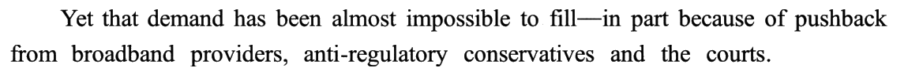
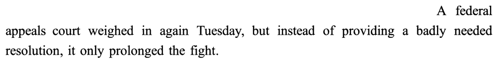
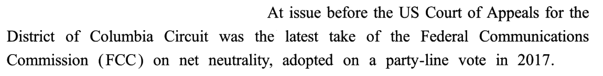
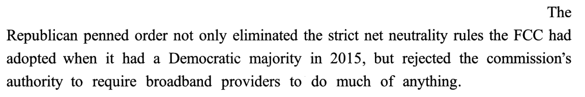
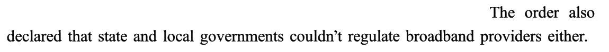
| 句 | 主语 | 做了什么 | 养活的选项 |
|---|---|---|---|
| ❶ | 宽带商 · 保守派 · 法院 | 反对（pushback） | 37D 的 anti-regulatory（原词，原文贴在 conservatives 上） |
| ❷ | 上诉法院 | 没给 resolution，只拖延 | 37C（resolution 挪给 FCC，还说「已颁布」） |
| ❸ | 法院审的对象 | FCC 2017 年的立场 | ——（定位句） |
| ❹ | FCC 的命令 | 废严格规则 · 否认自己的权力 | 37D ✔ · 37A（eliminated → sticks to） |
| ❺ | FCC 的命令 | 不许州和地方管 | 37D ✔ · 37B（说反） |
⭐ ❹ 里两个年份两种多数：2015 年 Democratic majority 立规则，2017 年 Republican penned order 废规则——❸ 的 party-line vote 就是这个意思：按党派站队投票。
③ FCC 的说辞（别的部门会管）vs FCC 的做法（叫停了调查）
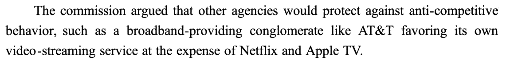
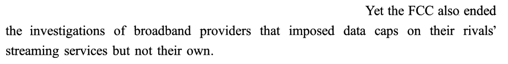
| 成分 | 说的是谁 | 信号 | 养活的选项 |
|---|---|---|---|
| ❶ that 从句主干 | 别的部门：会防范反竞争行为 | other agencies would protect against | 38C（protect against 的主语换成 AT&T） |
| ❶ such as 例子 | AT&T：偏袒自家流媒体、牺牲对手 | favoring its own … at the expense of | 38D ✔ · 38A（its own service → quality service） |
| ❷ | FCC：叫停了调查 | Yet the FCC also ended the investigations | 38B（ended → 正在接受调查） |
⚠️ ❶ 的 argued 是 FCC 的话，不是作者的：作者紧接着用 Yet 拆它——转述动词 argued ＋ 下一句 Yet ＝ 作者不认同（对照④❷ 的 rightly argued：作者认同）（老卡 R130 转述动词测距离）。
④ 法院照先例维持去监管令；米利特法官：这结果脱离现实
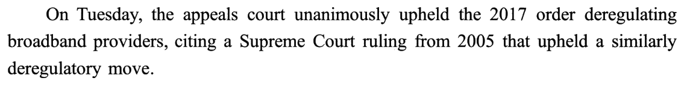
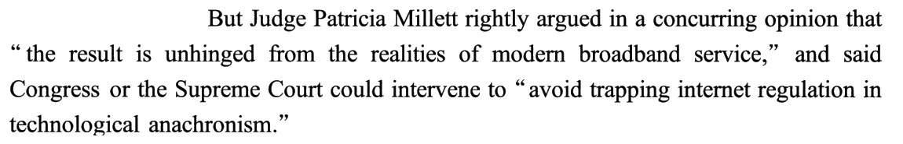
| 句 | 说话的人 | 用的尺子 | 养活的选项 |
|---|---|---|---|
| ❶ | 上诉法院 | 2005 年的先例（citing a Supreme Court ruling） | 39C（与此前裁决不一致——说反） |
| ❷ 前半 | 米利特法官（作者 rightly 背书） | 现代宽带的现实（unhinged from the realities） | 39B ✔ |
| ❷ 后半 | 米利特法官 | 技术在变（technological anachronism） | 37A 的 out-of-date（挪给了 FCC） |
⭐ anachronism（时代错置）≈ out-of-date：这是 ❷ 里最像 37A 的词——可它批评的是「互联网监管被困在旧技术框架里」（法院照 2005 年先例判的后果），不是 FCC「坚守」什么过时命令；FCC 恰恰是废掉旧规则的那一方（新卡 R307）。
⑤ 第二块比分牌：推翻一刀切禁州令，保留逐个否决权——官司还得打
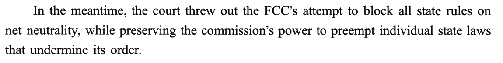
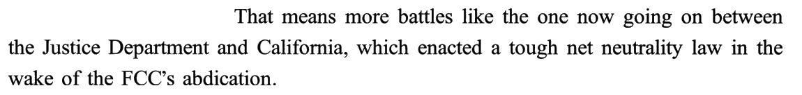
| 判决项 | 原文信号 | FCC | 各州 |
|---|---|---|---|
| 2017 年去监管命令 | unanimously upheld（④❶） | ✅ 赢 | —— |
| 一刀切禁止州立法 | threw out the FCC’s attempt（⑤❶） | ❌ 输 | ✅ 可以立法 |
| 逐个否决破坏其命令的州法 | while preserving the commission’s power（⑤❶） | ✅ 保住 | ❌ 立了也可能被否 |
more battles）——这正是 ⑥ 要国会「一劳永逸」（once and for all）的理由（老卡 R152 判决新闻的两块比分牌）。⚠️ 37B「FCC 已允许各州介入」的料就来自这里：法院驳回了 FCC 的禁州令，是法院让各州有了空间，不是 FCC 允许的；FCC 自己的命令（②❺）恰恰是不许各州管——主体换了，方向也反了。
⑥ 结论：国会必须出手，明确授权 FCC 管住宽带商
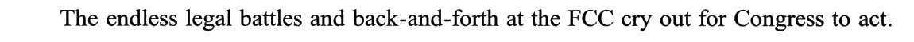
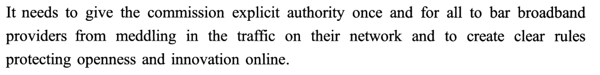
| ①（担忧／要求） | ⑥（对策） | 两头被借进了哪道题 |
|---|---|---|
favor affiliated websites over their rivals’ | meddling in the traffic on their network | 36C 借了⑥的 traffic on their network，还放大成「所有流量变慢」 |
rules that would prevent broadband providers from | bar broadband providers from ＋ clear rules | 40C ✔（立规矩管住宽带商） |
the freedom and innovation | openness and innovation online | 40D（innovation online → diversify online services） |
⭐ explicit 与 clear：前五段的规则一路被废、被拦、被拖，原因都是「授权不清」（FCC 说自己没权、各州有没有权要打官司）——末段两个形容词点出病根：不明确。
02题目与解析（点选项即判 · 再看解析）
十五个干扰项分九族：后段借料 2（36C ← ⑥❷ traffic on their network · 37A ← ④❷ anachronism）· 主体串门 3（37B 法院放开各州 → FCC 允许 · 37C 法院没给的 resolution → FCC 颁布 · 38C 别的部门 protect against → AT&T）· 授权链挪位 2（40A 被管方 → 被保护方 · 40B 执行方 → 被管方）· 夸大 1（36B 偏袒 → 控制）· 方向反 2（36D 偏袒 → 加剧竞争 · 39C 援引先例 → 与先例不一致）· 时态反 1（38B 已叫停调查 → 正在被调查）· 褒贬反 1（38A 牺牲对手 → 追求优质服务）· 无中生有 2（39A 模棱两可 · 39D 聚焦琐事）· 目的偷换 1（40D 开放与创新 → 多样化）。
⭐ 本篇最该练的是「管」：全文是一张权力图，36 问宽带商被担心做什么（偏袒）· 37 问 FCC 的立场（三个动作的公因式）· 38 问 AT&T 在例子里扮演谁（被防范的行为，不是防范者）· 39 问法官怎么评判决（脱离现实）· 40 问谁该出手管（国会授权 FCC）。2021 T1 是五个「让」，T2 是五个「证」，T3 是五个「因」，T4 是五个「管」。
事实细节（首段的担忧）36. There has long been concern that broadband providers would
正源：①❶ favor affiliated websites over their rivals’ ＋ ①❷ picking winners and losers online
▸ 第一步：对主语——题干 broadband providers ＝ ①❶ the cable and phone companies selling broadband connections（长说法），①❷ 起才统一叫 broadband providers；
▸ 第二步：取担心的内容——had the power and incentive to favor affiliated websites over their rivals’：偏袒关联网站、亏待对手网站 ＝ 厚此薄彼；
▸ 第三步：对词——favor A over B ↔ show partiality；affiliated websites 和 rivals’ (websites) 都是宽带商的 clients ⟹ A；①❷ 的 picking winners and losers 是同一件事的比喻说法，可作验证（新卡 R306）。
黄皮书技巧栏（要点转述）：事实细节题的基本策略是「用题干关键词回文定位 → 锁定信息并比对选项」；单个句子不足以解答时，应向所在句群求助。本题由 broadband providers 找到的 broadband providers … picking winners and losers online 不够具体，故把视野提升至段落：以因果表达 That’s why 为纽带，确立 worried 与 prevent … from 的语义关联（因为担忧，所以需要制止），从而确定 companies selling broadband connections 与 broadband providers 同指，favor affiliated websites over their rivals’ 与 picking … 一致，从而确定同样体现「偏袒」之意的 A。
[B] bring web-based firms under control ⚠️ 夸大：← ①❶
web-based companies——原文担心的是偏袒，B 拔成「完全控制网络公司」；而且原文里 web-based companies 是担心的一方（advocates for … web-based companies）（黄皮书：将宽带运营商的做法由「不公正对待互联网公司」夸大为「完全控制互联网公司」）。[C] slow down the traffic on their network ⚠️ 后段借料 ＋ 泛化：← ⑥❷
meddling in the traffic on their network——the traffic on their network 五个词原样来自末段的对策句；原文担心的是对不同网站区别对待，C 说成「把网上所有流量都放慢」，恰好把「区别」这个核心抹掉了（黄皮书：将「在宽带连接上对己方网站给予优待，却限制竞争对手的网站」泛化为「降低所有网站的网络流量传输速度」）。[D] intensify competition with their rivals ⚠️ 方向反：← ①❶
their rivals’——偏袒自家、打压对手是在削弱竞争，D 说成「加剧竞争」（黄皮书：把背后隐含的「刻意增强己方优势、削弱市场竞争」曲解为与之完全相悖的「强化竞争」）。
事实细节（机构立场）37. Faced with the demand for net neutrality rules, the FCC
正源：②❹ eliminated the strict net neutrality rules ＋ rejected the commission’s authority ＋ ②❺ couldn’t regulate broadband providers either
▸ 第一步：题干 Faced with the demand——回扣 ①❷ 的 demand、②❶ 的 that demand：问的是「面对这个要求，FCC 怎么做」；
▸ 第二步：只看 FCC 自己的动作——②❸ 起镜头对准 FCC 2017 年的立场（take）：废严格规则 · 否认自己的权力 · 不许州和地方管；
▸ 第三步：取公因式——三个动作都是在拆监管 ⟹ anti-regulatory stance；这个词原文贴在②❶ 的 conservatives 身上，但 FCC 的动作完全撑得起它（新卡 R307）。
黄皮书技巧栏（要点转述）：本题要求把握论述主题的变换、辨别相关信息。先梳理本段脉络：网络中立未能实行（impossible to fill）→ 法庭判决无助于解决问题（instead of providing a … resolution）→ 指出法庭面对的核心问题「FCC 的最新政策（2017 年的规定）」→ 介绍 FCC 的最新规定。由此可知答案出现在最后一部分：「废除严格的网络中立性规则，否决委员会对宽带运营商提出行为要求的权力，禁止当地政府监管运营商」明确了 FCC 的政策整体具有去监管化的倾向，从而锁定 D。
the strict net neutrality rules the FCC had adopted … in 2015 ＋ ④❷ technological anachronism——FCC 对 2015 年规则是废除（eliminated），不是坚守；out-of-date 是法官批评法院结果的 anachronism 挪过来的（黄皮书：将 FCC 对 2015 年规则的当下立场由「摒弃」篡改为「坚守」，且文中并未指出 2015 年的规则过时）。[B] has allowed the states to intervene ⚠️ 方向反 ＋ 主体串门：← ②❺
state and local governments ＋ ⑤❶ threw out the FCC’s attempt to block all state rules——FCC 的命令是不许各州管；后来是法院驳回了 FCC 的禁州令，放开各州的是法院，不是 FCC（黄皮书：与「禁止各州监管宽带运营商」相反）。[C] has issued a special resolution ⚠️ 主体串门：← ②❷
instead of providing a badly needed resolution——resolution 的主语是上诉法院，而且是「没给」（黄皮书：②句指出上诉法院未能给出解决办法，而非 FCC 提出了特别解决方案）。[D] takes an anti-regulatory stance ✔ ②❹❺ 三个动作的概括。
事实细节（例子里的角色）38. What can be learned about AT&T from Paragraph 3?
正源：③❶ anti-competitive behavior, such as … AT&T favoring its own video-streaming service
▸ 第一步：切 that 从句——主语 other agencies，谓语 would protect against，宾语 anti-competitive behavior；
▸ 第二步：判 such as 挂在谁身上——例子的内容是「AT&T 偏袒自家流媒体、牺牲 Netflix 和 Apple TV」，这是一种行为，只能挂在 behavior 上，不能挂在 agencies 上；
▸ 第三步：对词——anti-competitive behavior ↔ anti-competitive practices ⟹ D（新卡 R308）。
黄皮书技巧栏（要点转述）：本题就长难句设题，解题关键在于利用语法知识及逻辑推理正确理解句内关系。定位句内 that 从句的主干指出 FCC 以外的部门负责监管反竞争行为，such as 进而引出事例，这时有两种可能：1. 事例是在说明其他机构对抗不公平竞争（other agencies …）；2. 事例是在说明反竞争行为（anti-competitive behavior）。将事例具体内容和主句结合推理可知，事例在说明宽带运营商（包括 AT&T）如何在流量上区别对待流媒体公司、进行反竞争活动，锁定 D，同时排除不合逻辑的 C。
its own video-streaming service——原文是牺牲对手照顾自家的恶性竞争，A 说成「追求高质量服务」的正面竞争（黄皮书：歪曲为以提供高质量服务求胜的正面竞争行为）。[B] It is under the FCC’s investigation ⚠️ 时态反 ＋ 对象未点名：← ③❷
the FCC also ended the investigations of broadband providers——FCC 是叫停了调查，不是「正在调查」；被调查的宽带商也没点名 AT&T（黄皮书：②句只谈对某些宽带运营商的调查，是否含 AT&T 无从推断）。🔍 黄皮书另说「即便它正在接受调查，调查者也并非 FCC 而是 other agencies」——可③❷ 的主语就是 FCC，这半句与原文不合；B 错在「已终止」与「正在」。[C] It protects against unfair competition ⚠️ 主体串门：← ③❶
other agencies would protect against anti-competitive behavior——protect against 的主语是别的部门，AT&T 是被防范的那一方（黄皮书：将打击反竞争行为的负责方由「FCC 之外的其他监管部门」窜改为「AT&T／宽带运营商（实为被监管对象）」）。[D] It engages in anti-competitive practices ✔ anti-competitive practices 复现原文对 AT&T 行为的定性 anti-competitive behavior。
人物观点（法官评判决）39. Judge Patricia Millett argues that the appeals court’s decision
正源：④❷ the result is unhinged from the realities of modern broadband service
▸ 第一步：找她的原话——两个宾语从句：the result is unhinged from the realities …（评价结果）＋ Congress or the Supreme Court could intervene …（建议）；题干问她对 decision 的看法 ⟹ 取第一个；
▸ 第二步：解 unhinged——hinge 是「铰链」，un- 否定：「脱了铰链」＝ 脱节；unhinged from the realities ↔ out of touch with reality；
▸ 第三步：反向验证——第二个从句 avoid trapping internet regulation in technological anachronism（别让监管困在旧技术里）同样在说「跟不上现实」⟹ B（老卡 R240 换尺子）。
黄皮书技巧栏（要点转述）：本题表面考人物观点，实际考对长难句核心信息的总结推理，解题时应结合上下文（借助逻辑词、情感词、段落主旨等）做出合理推断。步骤：1. 锁定第四段②句为正确项来源，但该句较为抽象难懂，需结合上下文理解——借 But 可知首句让步肯定此次裁决的法理依据，故②句法官之言应转而传达结果的不足或缺陷；2. 结合定位处关键信息 unhinged from the realities、trapping internet regulation in technological anachronism（构词法可辅助推测：前缀 un- 具有否定含义）可知法官认为裁定脱离现实／落后于技术发展，初步判定 B。
the Supreme Court could intervene——法官请国会或最高法院介入，是因为结果脱离现实、后果严重，不是因为判决意思含糊；判决明明是 unanimously upheld，一点不含糊（黄皮书：并非其信息模棱两可）。[B] is out of touch with reality ✔ unhinged from the realities 的同义改写。
[C] is at odds with its earlier rulings ⚠️ 方向反：← ④❶
citing a Supreme Court ruling from 2005——法院是援引先例判的，新判决与旧裁决一致；而且这句是法院的做法，与法官个人看法无关（黄皮书：与「上诉法院援引了最高法院 2005 年的一项裁决」相悖，且无关帕特里夏·米利特法官个人的看法）。[D] focuses on trivialities ⚠️ 无中生有：← ④❷——法官说的是结果脱离现实、会造成严重影响，不是判决纠缠细枝末节（黄皮书：断章取义）。
作者观点（末段建议）40. What does the author argue in the last paragraph?
正源：⑥❶ cry out for Congress to act ＋ ⑥❷ give the commission explicit authority … to bar broadband providers
▸ 第一步：末段首句就是论点——cry out for Congress to act ↔ Congress needs to take action；
▸ 第二步：看 ❷ 的授权链——国会给 FCC 明确授权 → FCC 禁止宽带商干预流量、立规保护开放与创新 ＝ 确保网络中立（net neutrality 就是①定义的「不偏袒」）；
▸ 第三步：给每个选项在链上找位置——A 站在被管方（却说要保护）、B 站在执行方（却说要被管）、D 站在目的（却换了目的）⟹ C（新卡 R309，老卡 R18 末段建议给了谁）。
黄皮书技巧栏（要点转述）：本题考查末段主旨／作者的核心建议，因此完全可以从全文高度解题：首段介绍对网络中立性的需求由来已久，第二、三段指出网络中立无法实施并聚焦监管部门 FCC 的不合理政策，第四、五段分析上诉法院有关网络中立的最新判决的不足，第六段进而对国会提出建议。由此可知，作者自始至终都在关注网络的中立性／网络的公平与开放，而选项中体现这一点的只有 C；再将其与原文信息比对，即可发现选项内容与「国会应当赋权 FCC，禁止宽带运营商干预网络流量，保证网络中立性」相符。
broadband providers ＋ protecting——原文是 bar broadband providers from meddling（禁止宽带商），protecting 的宾语是 openness and innovation（黄皮书：将宽带运营商的处境由「执法者打击对象」窜改为「执法者保护对象」）。[B] The FCC should be put under strict supervision ⚠️ 授权链挪位（执行方 → 被管方）：← ⑥❷
give the commission explicit authority ＋ ②❹ strict … rules——作者要给 FCC 权力，不是管 FCC；strict 是从②❹ 的 strict net neutrality rules 借来的（黄皮书：将监管者 FCC 偷换为被监管者，文中被监管者实为宽带运营商）。[C] Congress needs to take action to ensure net neutrality ✔ ⑥❶ cry out for Congress to act ＋ ⑥❷ 两条建议的概括。
[D] Rules need to be set to diversify online services ⚠️ 目的偷换：← ⑥❷
clear rules protecting openness and innovation online——规则的目的是保护开放与创新，「线上服务多样化」至多是它的结果之一（黄皮书：将「需制定明确法规来保护网络的开放性和创新性」偷换为「需制定法规以确保线上服务的多样化」，后者只是结果之一，不足以体现制定法规的目的）。
02+专栏 · 首段担忧与末段对策是一面镜子：36 题问「人们一直担心宽带商会怎样」——①❶ 写的是具体行为（偏袒关联网站、亏待对手），⑥❷ 写的是概括说法（干预自家网络上的流量）。C 的 the traffic on their network 五个词原样来自⑥❷，还把「区别对待」放大成「所有流量变慢」。问担忧，只取担忧那一头的具体说法；对策句的词搬过来，就是泛化项
| 镜像的一层 | ①（担忧／要求） | ⑥（对策） | 36 题 |
|---|---|---|---|
| 宽带商做了什么 | favor affiliated websites over their rivals’（区别对待） | meddling in the traffic on their network（干预流量） | A ✔ 取① · C ✗ 借⑥ ＋ 抹掉「区别」 |
| 要怎么管 | rules that would prevent … from | to bar … from ＋ clear rules | ——（40 题的料） |
| 为了守住什么 | the freedom and innovation | openness and innovation online | ——（40D 的料） |
▸ C 错在两处：① 料借错了段（题干限定的是一直以来的担忧，①；⑥是作者给的对策）；② 泛化——slow down the traffic 是「所有流量都变慢」，可原文的要害是对不同网站区别对待（自家快、对手慢），一刀切地慢反倒不偏袒任何人（黄皮书：泛化）。
▸ 怎么用在考场上：首段细节题，选项里若出现末段或标题式的概括说法，先回首段找它的具体版本——找得到、意思对得上才选；找不到具体版本，就是借料（老卡 R7 题干限定第 N 段）。
📌 反过来也成立：40 题问末段，⑥❷ 的 bar … from 正是①❷ prevent … from 的镜像——一篇社论读完首段，你已经能猜到末段要说什么（老卡 R132 问题—对策镜像）。
02++专栏 · 机构立场＝动作的公因式：37 题问「面对网络中立的要求，FCC 怎样」——正解 anti-regulatory 是原文原词，可原文把它贴在保守派身上（②❶），FCC 从没被这样称呼。判据是 FCC 自己的三个动作（②❹❺：废规则 · 否认自己的权力 · 不许各州管），三个动作的公因式就是「反监管」。原词贴在谁身上不要紧，动作撑不撑得起才要紧；反过来，三个干扰项的词全从别的主体身上借来（法院的 resolution、法官的 anachronism、法院放开的 states）
| 选项 | 关键词原文在哪 | 原文贴在谁身上 | FCC 的动作撑不撑得起 | 判 |
|---|---|---|---|---|
| A sticks to an out-of-date order | ④❷ anachronism（≈ out-of-date） | 法官批评法院的结果 | ❌ FCC 是废掉 2015 规则（eliminated） | ✗ |
| B has allowed the states to intervene | ②❺ state … governments · ⑤❶ state rules | 法院驳回禁州令 | ❌ FCC 是不许各州管（couldn’t regulate） | ✗ |
| C has issued a special resolution | ②❷ resolution | 法院（而且没给） | ❌ 原文无 | ✗ |
| D takes an anti-regulatory stance | ②❶ anti-regulatory | 保守派 | ✅ 废 · 否认 · 不许，三个动作的公因式 | ✔ |
▸ 本题的反直觉之处：老卡 R1 说「原词复现是陷阱」，可 37D 恰恰是原词复现——原词复现本身不判对错，判据是它在选项里的主语，和原文里撑得起它的动作。D 的原词原来属于保守派，可 FCC 的动作和保守派的主张同向，这就是作者把它们放在同一段的用意：②❶ 先列反对者，②❸–❺ 用 FCC 的命令示范反对者要的是什么。
▸ 三个干扰项是同一个手法：把别的主体的词安到 FCC 头上——A 借法官的词、B 借法院的结果、C 借法院没做成的事。这篇的主体有十几个，主体串门是命题人的主刀（老卡 R117 三方博弈先画三栏，R21 主体校验）。
📌 A 还有一层时间陷阱：「坚守过时命令」听着像在批评 2017 年的命令——可 2017 年的命令在题目当时是最新的（the latest take）；说它过时的是法官，而且法官说的是法院照 2005 年先例判出来的「结果」。
02+++专栏 · such as 挂在谁身上：38 题问从第三段能得知 AT&T 什么——③❶ 的 that 从句是「别的部门会防范反竞争行为，such as 像 AT&T 这样的集团偏袒自家流媒体」。such as 前面有两个名词可挂：主语 other agencies（防范者）、宾语 anti-competitive behavior（被防范的行为）。例子的内容是一种行为 ⟹ 挂在 behavior 上 ⟹ AT&T 是反竞争的样本（D），不是防范者（C）
| 成分 | 原文 | 角色 | 选项 |
|---|---|---|---|
| 说话人 | The commission argued that | FCC 的说辞（③❷ 用 Yet 拆穿） | —— |
| 从句主语 | other agencies | 防范者 | C 把它换成 AT&T ✗ |
| 从句宾语 | anti-competitive behavior | 被防范的行为 | D ✔（behavior → practices） |
| such as 例子 | a … conglomerate like AT&T favoring its own … | 行为的样本（偏袒自家、牺牲对手） | A 把它说成「追求优质服务」✗ |
| 下一句 | the FCC also ended the investigations | FCC 撤了调查（不点名 AT&T） | B「正在接受 FCC 调查」✗ |
▸ 本句的例子里还套着一个 like：a broadband-providing conglomerate like AT&T——AT&T 是「宽带集团」的例子，「宽带集团偏袒自家」又是「反竞争行为」的例子：两层举例，最外层决定 AT&T 的角色。
▸ B 的两个错：③❷ 的 investigations 是被 FCC 叫停的（ended），选项说「正在接受」；被调查的是「一些宽带商」，没点名 AT&T。黄皮书说调查者是 other agencies，与③❷ 主语 the FCC 不合——这半句可以忽略，前两条理由足够。
📌 老卡 R3 的一个变体：R3 说「例证题的答案是例子服务的观点」——本题反过来问例子本身（What can be learned about AT&T），答案仍要从它服务的那个名词取定性：例子服务 anti-competitive behavior，所以 AT&T 被定性为 anti-competitive（老卡 R3／R21）。
02++++专栏 · 一个判决两块比分牌、两把尺子：④⑤ 是同一个判决（Mozilla 诉 FCC，2019 年 10 月 1 日）。④ 法院照 2005 年的先例维持去监管令——用的是旧尺子；法官米利特说「这结果脱离了现代宽带的现实」——换了一把新尺子，作者用 rightly 站她一边 ⟹ 39B。⑤ 法院驳回 FCC 的禁州令、却保留它逐个否决州法的权力——一输一赢，官司还得打。⑤ 没有题，却给 37B 供了料
| 谁 | 说了／判了什么 | 尺子 | 作者 | 题 |
|---|---|---|---|---|
| 上诉法院（④❶） | 一致维持 2017 年命令 | 2005 年最高法院先例 | 中性记录 | 39C 说「与先前裁决不一致」✗ |
| 米利特法官（④❷） | 结果脱离现实；国会或最高法院可介入 | 现代宽带的现实 | rightly ✔ | 39B ✔ |
| 上诉法院（⑤❶ 前半） | 驳回 FCC 一刀切禁州令 | —— | —— | 37B 借料（放开各州的是法院） |
| 上诉法院（⑤❶ 后半） | 保留 FCC 逐个否决州法的权力 | —— | ⟹ 更多官司（⑤❷） | —— |
▸ 协同意见（concurring opinion）是「投了赞成票、却另写不满」：法官受先例约束，只能维持；她的不满写在另一份意见书里——39 题问的是她对判决的评价，取她的话，不取她的票（老卡 R240 换尺子：认可裁定、嫌它用错了尺子）。
▸ 作者站在哪边，看转述动词前的副词：③❶
The commission argued（下一句 Yet 拆穿）vs ④❷ rightly argued——同一个 argued，一个被拆、一个被赞（老卡 R130 转述动词测距离）。📌 39C 的方向为什么反：④❶ citing a Supreme Court ruling … that upheld a similarly deregulatory move——引先例判案，就是在和先例保持一致；法官的不满恰恰是「先例过时了、判决却还跟着它」。C 说「与先前裁决不一致」，把她不满的原因说反了。
02+++++专栏 · 授权链：40 题问作者在末段主张什么——⑥❷ 是一条三环链：国会（give … explicit authority）→ FCC（to bar）→ 宽带商（from meddling）。正解 C 站在链头（国会采取行动）；A 把被管的宽带商挪到「被保护」，B 把执行的 FCC 挪到「被监管」，D 把链的目的（开放与创新）换成「多样化」。末段建议题，先画链，再给每个选项找它站的那一环
| 链上的位置 | 原文 | 选项站在这儿时该说什么 | 选项实际说了什么 |
|---|---|---|---|
| 授权者 | cry out for Congress to act · It needs to give | 国会要行动 | C Congress needs to take action ✔ |
| 执行者 | the commission（获得 explicit authority） | FCC 要被授权 | B FCC 要被严格监管 ✗（执行者 → 被管者） |
| 被管者 | bar broadband providers from meddling | 宽带商要被禁止干预流量 | A 宽带商的权利要被保护 ✗（被管者 → 被保护者） |
| 目的 | protecting openness and innovation online | 保护开放与创新 | D 让线上服务多样化 ✗（目的偷换） |
▸ B 的 strict 是借来的：②❹ the strict net neutrality rules——原文的 strict 修饰的是管宽带商的规则，B 把它挪成「严格监管 FCC」。形容词跟着中心词走，中心词一换，整个意思就反了（老卡 R34 概念嫁接）。
▸ 为什么作者要国会出手，不要 FCC 自己出手：因为 FCC 会随执政党反复（back-and-forth：2015 立、2017 废），法院只能按先例判（④），州立法要逐个打官司（⑤）——只有国会立法能 once and for all。这条理由串起了②④⑤三段，40 题是全文的收口（黄皮书：可从全文高度解题）。
📌 后话（WebSearch 核）：FCC 2024 年恢复了网络中立规则，2025 年 1 月被第六巡回法院撤销，理由之一正是「这需要国会明确授权」——⑥❷ 的 explicit authority 五年后仍是症结。这条只帮你理解，考场上用不着。
02++++++专栏 · 十五个干扰项的产地总账 ＋ 同序检查 ＋ 2021 四篇回看
| 题 | 正解出处 | 干扰项 ← 原料 |
|---|---|---|
| 36 | ①❶ favor … over their rivals’ | B ← ①❶ web-based companies · C ← ⑥❷ traffic on their network · D ← ①❶ rivals’ |
| 37 | ②❹❺ 三个动作（＋ ②❶ anti-regulatory） | A ← ②❹ 2015 rules ＋ ④❷ anachronism · B ← ②❺ ＋ ⑤❶ state rules · C ← ②❷ resolution |
| 38（限③） | ③❶ such as … AT&T favoring | A ← ③❶ its own service · B ← ③❷ investigations · C ← ③❶ other agencies would protect against |
| 39 | ④❷ unhinged from the realities | A ← ④❷ could intervene（无中生有）· C ← ④❶ 2005 ruling · D ← 无 |
| 40（限⑥） | ⑥❶ cry out for Congress to act ＋ ⑥❷ | A ← ⑥❷ broadband providers ＋ protecting · B ← ⑥❷ the commission ＋ ②❹ strict · D ← ⑥❷ innovation online |
▸ 十五个干扰项里，十三个的原料在原文、两个无中生有（39A、39D）。本篇的主刀是「主体串门」和「后段借料」：37B／37C／38C 把一个主体的动作安给另一个主体，36C／37A 把后面段落的词借到前面的题里——主体多的社论，先给每个主体列一栏，再看选项的词原来住在谁那一栏（老卡 R117）。
▸ 三道题的正解是原文原词或近乎原词（37D anti-regulatory · 38D anti-competitive · 40C Congress … act）——本篇的命题思路是「正解贴原文、干扰项换主体」。所以「原词复现是陷阱」在这篇里要加一句：原词放在原来的主体身上就是对的，放到别的主体身上才是陷阱（老卡 R1）。
⭐ 2020 T1 归 → T2 账 → T3 驳 → T4 时 → 2021 T1 让 → T2 证 → T3 因 → T4 管：2021 四篇四种文体——评论（让步—转折）、科学报道（证据链）、解释文（原因表）、社论（权力图）——每一篇的五道题都在问同一张表的不同格子；本篇的表是「主体 × 做了什么 × 被谁管」。
03长难句精析 · 14 句（全文 15 句，只跳 ②❺ 一句 14 词的短句）
本篇 15 句 427 词，平均 28.5 词一句（2021 T1 27.7、T2 17.5、T3 29.6）；超过 30 词的有 8 句（④❷ 39 · ②❹ 38 · ①❷ 35 · ①❶ 34 · ②❸ 34 · ⑥❷ 34 · ⑤❶ 32 · ③❶ 31）。句条是原卷扫描，分析里只引短语。这篇的句子难在「挂」和「倒」：① 挂——主语、宾语后面挂一长串分词或从句（companies selling broadband connections · the 2017 order deregulating … · conglomerate like AT&T favoring …），-ing 分词后置修饰名词是本篇最多的结构，读成谓语就全错；② 倒——②❸ 整句完全倒装（At issue … was …），④❷ 一句挂两个宾语从句、还带两段引语。读法：先找谓语动词（带时态的那个），把 -ing／-ed 后置修饰整块拎走，再看 such as／while／instead of 把句子切成了哪几块。
- 时间状语：
From the early days of broadband——from 表「从……起一直」，和 has long been concern（36 题干）对上。 - 主语：
advocates for consumers and web-based companies——advocate for「为……代言的人」，for 管两个宾语。 - 谓语 ＋ 宾语从句：
worried that …；从句主语the cable and phone companies后挂现在分词selling broadband connections（＝ that sell …）。 - 从句谓语：
had the power and incentive to favor A over B——power 和 incentive 共用一个不定式；rivals’ 后省 websites。
prefer A to B · choose A over B（36A show partiality）。- 句首：
That’s why …——That 回指 ❶ 整句（担忧），why 引导表语从句：「这就是……的原因」。 - 表语从句主干：
there has been such a strong demand for rules——现在完成时：要求一直都在。 - 定语从句：
that would prevent broadband providers from picking winners and losers online——prevent sb from doing。 - 结果状语：
preserving the freedom and innovation，再挂定语从句that have been the lifeblood of the internet（先行词是 freedom and innovation，所以用复数 have）。
- 转折 ＋ 主干：
Yet that demand has been almost impossible to fill——be impossible to do，主语 demand 是 fill 的逻辑宾语（fill a demand「满足需求」）。 - 破折号后的原因状语：
in part because of pushback from A, B and C——in part「部分地」，提醒这不是全部原因。
- 分句一：
A federal appeals court weighed in again Tuesday——weigh in「插手、参与（争论）」；Tuesday 前省 on（美式新闻常见）。 - 分句二：
but instead of providing a badly needed resolution, it only prolonged the fight——instead of doing「非但没有……」，主句 only「只不过」。
- 完全倒装：表语
At issue before the US Court of Appeals（for the D.C. Circuit） 提前，系动词was，主语the latest take of the FCC on net neutrality后置。 - 还原语序：The latest take … was at issue before the court——「FCC 关于网络中立的最新立场摆在法院面前待审」。
- 后置定语：
adopted on a party-line vote in 2017，修饰 take。
What’s your take on this?（03+）。- 主语：
The Republican penned order——Republican penned（共和党人起草的）整个作 order 的前置定语；pen 作动词「写」。 - 谓语一：
not only eliminated the strict net neutrality rules；rules 后省略关系代词：the FCC had adopted when it had a Democratic majority in 2015——过去完成时，早于 2017。 - 谓语二：
but rejected the commission’s authority——not only … but (also)，also 省略。 - authority 的同位不定式：
to require broadband providers to do much of anything——not … much of anything 在否定语境里＝「几乎任何事」。
- 主干：
The commission argued that …——说话人是 FCC。 - 宾语从句：
other agencies would protect against anti-competitive behavior——would 是转述里的过去将来。 - 举例：
such as a broadband-providing conglomerate like AT&T favoring its own video-streaming service——such as 的宾语是 conglomerate，favoring 是它的后置修饰（「偏袒……的集团」＝ 集团偏袒……这件事）。 - 方式：
at the expense of Netflix and Apple TV——「以牺牲……为代价」。
economic growth at the expense of the environment（05 素材 ③）。- 主干：
Yet the FCC also ended the investigations of broadband providers——ended ＝ 叫停、终止。 - 定语从句：
that imposed data caps on their rivals’ streaming services but not their own——impose A on B「把 A 强加给 B」；but not their own ＝ but did not impose data caps on their own（省略）。
- 主干：
the appeals court unanimously upheld the 2017 order——uphold（upheld）「维持（判决、命令）」。 - 后置定语：
deregulating broadband providers——修饰 order：「解除对宽带商监管的命令」。 - 伴随状语：
citing a Supreme Court ruling from 2005，再挂定语从句that upheld a similarly deregulatory move——move 作名词「举措」。
- 主语 ＋ 谓语一：
Judge Patricia Millett rightly argued in a concurring opinion that …——rightly 是作者插进来的评价；in a concurring opinion 地点状语插在谓语和宾语从句之间。 - 宾语从句一（直接引语）：
the result is unhinged from the realities of modern broadband service。 - 谓语二：
and said (that) Congress or the Supreme Court could intervene。 - 目的状语（引语）：
to “avoid trapping internet regulation in technological anachronism”——avoid doing；trap A in B。
- 主干：
the court threw out the FCC’s attempt to block all state rules（on net neutrality）——throw out「驳回（诉讼、请求）」；attempt to do「企图做」。 - 对比状语：
while preserving the commission’s power to preempt individual state laws——while doing「同时却……」；preempt「（上位法）优先于、取代」。 - 定语从句：
that undermine its order，修饰 laws。
- 主干：
That means more battles——That 回指 ❶ 的判决结果。 - 介词短语：
like the one now going on between the Justice Department and California——the one ＝ the battle；going on 现在分词后置修饰 one。 - 非限制性定语从句：
which enacted a tough net neutrality law，时间状语in the wake of the FCC’s abdication——which 指 California。
- 主语：
The endless legal battles and back-and-forth at the FCC——两个并列名词；back-and-forth「来回反复」。 - 谓语：
cry out for Congress to act——cry out for sth「迫切需要」；for sb to do 复合结构。
- 主干：
It needs to give the commission explicit authority——It ＝ Congress；give sb sth 双宾语。 - 插入：
once and for all「一劳永逸地」。 - 两个并列不定式（修饰 authority 或作目的）：
to bar broadband providers from meddling in the traffic on their network＋and to create clear rules；rules 后挂protecting openness and innovation online。
03+熟词僻义清算表 · 51 处
生词集中在美国政治与法律（conglomerate、preempt、anachronism、abdication、unhinged），大多能靠上下文猜；真正会让你读错的是熟词换了义项，分三族：① 法院与机构（take 是「立场」不是「拿」、order 是「命令」不是「顺序」、uphold 是「维持原判」、throw out 是「驳回」、move 是「举措」、ruling 是「裁决」、act 是「采取行动」不是「表演」）· ② 政治与立法（pen 是「起草」、adopt 是「通过」不是「收养」、party-line 是「按党派站队的」、authority 是「权力」不是「权威」、bar 是「禁止」不是「酒吧」、fill 是「满足」、majority 是「多数党」）· ③ 网络与商业（favor 是「偏袒」、traffic 是「（网络）流量」不是「交通」、cap 是「上限」不是「帽子」、affiliated 是「关联的」、expense 是「代价」）。
| 词 / 短语 | 你以为 | 本篇的意思 | 出处与作用 |
|---|---|---|---|
advocate | （v.）提倡 | （n.）代言人、倡导者（advocates for consumers） | ①❶ ⭐⭐——主语是「人」 |
cable | 电缆 | 有线电视（公司）（cable companies） | ①❶ ⭐⭐ |
connection | 联系、关系 | （网络、电话的）接入、连接服务 | ①❶ broadband connections ⭐ |
favor | 喜爱；帮忙（n.） | （v.）偏袒（favor A over B） | ①❶ ③❶ ⭐⭐⭐——36A partiality 的原料 |
affiliated | 附属的（学校） | （与公司）有关联的、旗下的 | ①❶ affiliated websites ⭐⭐ |
rivals’ | 对手（人） | 对手的（网站）——所有格后省略名词 | ①❶ ⭐⭐——over their rivals’ (websites) |
demand | 需求（经济） | （强烈）要求（demand for rules） | ①❷ ②❶ ⭐⭐——37 题干 Faced with the demand |
pick winners and losers | 挑出赢家输家 | （政府或垄断者）替市场决定谁成谁败 | ①❷ ⭐⭐⭐——政治常用语 |
preserve | 保存（食品） | 维护、守住（自由、权力） | ①❷ preserving the freedom · ⑤❶ preserving the power ⭐⭐——同词两处，宾语不同 |
lifeblood | 血液 | 命脉、生命线 | ①❷ ⭐⭐ |
fill | 填满 | 满足（需求、要求） | ②❶ impossible to fill ⭐⭐⭐ |
pushback | 往回推 | （对计划、政策的）抵制、反对 | ②❶ ⭐⭐ |
court | 球场；宫廷 | 法院、法庭（the courts 各级法院） | ②❶ ②❷ ④ ⑤ ⭐⭐ |
weigh in | 称体重 | 插手、参与（争论） | ②❷ ⭐⭐ |
badly | 坏地、差劲地 | （修饰 need／want）极其、非常 | ②❷ badly needed ⭐⭐⭐ |
resolution | 决心；分辨率 | 解决（办法） | ②❷ ⭐⭐⭐——37C 借来安到 FCC 头上 |
fight | 打架 | （政治、法律上的）争斗、较量 | ②❷ prolonged the fight ⭐ |
at issue | 有问题 | 待审的、争议中的 | ②❸ ⭐⭐——倒装句的表语 |
circuit | 电路；巡回赛 | （美国联邦）巡回上诉法院辖区 | ②❸ ⭐ |
take | 拿 | （n.）看法、立场（the latest take on） | ②❸ ⭐⭐⭐——37 题定位词 |
adopt | 收养 | （正式）通过（规则、议案） | ②❸ ②❹ ⭐⭐⭐ |
party-line | 电话合用线 | 按党派路线的（party-line vote 党派表决） | ②❸ ⭐⭐ |
pen | 钢笔 | （v.）写、起草（Republican penned 共和党人起草的） | ②❹ ⭐⭐⭐ |
order | 顺序；订单 | （行政机构的）命令、规定 | ②❹❺ ④❶ ⑤❶ ⭐⭐⭐——全文出现 4 次 |
majority | 大多数 | 多数党席位（a Democratic majority） | ②❹ ⭐⭐ |
authority | 权威、当局 | （法定的）权力、职权 | ②❹ ⑥❷ ⭐⭐⭐——首尾呼应：被否认 → 要明确 |
either | 两者之一 | （否定句末）也（不） | ②❺ ⭐⭐——FCC 不管，州也不许管 |
agency | 代理处、中介 | （政府）机构、部门 | ③❶ other agencies ⭐⭐⭐——38C 的主语偷换 |
conglomerate | 聚集物（地质） | （跨行业的）企业集团 | ③❶ ⭐⭐ |
expense | 费用 | （at the expense of）代价、牺牲 | ③❶ ⭐⭐ |
cap | 帽子 | 上限（data caps 流量上限） | ③❷ ⭐⭐⭐ |
uphold | 举起 | 维持（原判、命令） | ④❶ upheld × 2 ⭐⭐⭐ |
cite | 引用（文章） | 援引（判例、法律作为依据） | ④❶ citing a … ruling ⭐⭐ |
ruling | 统治的 | （n.）裁决、判决 | ④❶ ⭐⭐——39C rulings |
move | 移动 | （n.）举措、行动 | ④❶ a similarly deregulatory move ⭐⭐ |
concurring | 同时发生的 | （法官）协同的、同意判决结果的（concurring opinion） | ④❷ ⭐⭐⭐——投赞成票却另写不满 |
opinion | 看法 | （法官的）意见书 | ④❷ ⭐⭐ |
unhinged | （门）脱了铰链的；精神错乱的 | （unhinged from）与……脱节 | ④❷ ⭐⭐⭐——39B out of touch |
trap | 陷阱（n.） | （v.）把……困在（trap A in B） | ④❷ ⭐⭐ |
throw out | 扔掉 | 驳回（请求、诉讼） | ⑤❶ ⭐⭐⭐ |
block | 街区；积木 | （v.）阻止、拦下 | ⑤❶ ⭐⭐ |
preempt | 先发制人 | （上位法）优先于、使（下位法）失效 | ⑤❶ ⭐⭐⭐ |
battle | 战役 | （法律、政治上的）较量、官司 | ⑤❷ ⑥❶ ⭐⭐ |
Justice | 正义 | 司法（部）（the Justice Department） | ⑤❷ ⭐⭐ |
tough | 坚硬的；困难的 | （法律）严厉的 | ⑤❷ a tough … law ⭐⭐ |
wake | 醒来 | （in the wake of）紧随……之后 | ⑤❷ ⭐⭐⭐ |
abdication | （国王）退位 | （对职责的）放弃、撂挑子 | ⑤❷ ⭐⭐⭐——作者对 FCC 最重的评价 |
back-and-forth | 来回走动 | （政策的）反复、拉锯 | ⑥❶ ⭐⭐ |
act | 表演；法案（n.） | （v.）采取行动 | ⑥❶ for Congress to act ⭐⭐ |
bar | 酒吧；条、棒 | （v.）禁止（bar sb from doing） | ⑥❷ ⭐⭐⭐ |
traffic | 交通 | （网络）流量、数据传输 | ⑥❷ ⭐⭐⭐——36C 借的就是这个词 |
⭐⭐ 作者的评价词一路贴在主体身上：法院 badly needed … only prolonged（不满）· FCC 的说辞 argued … Yet（拆穿）· 法官 rightly（赞同）· FCC abdication（撂挑子）· 国会 cry out for（呼吁）——社论的立场不用找「I think」，看这些副词和名词就够了。
04词汇复盘（点卡片看详情）· 117 张
05可搬进作文的素材 · 8 组
本篇话题——规则与监管、政府与市场、公平竞争、互联网的开放——正对英语一大作文里「规则与自由」「网络时代的公平」「政府该不该管」「问题拖着不解决」一类题目（网络平台垄断、大数据杀熟、校园规则、公共政策都能用）。只搬句式骨架，不搬原文：下面每组的英文是按原文句式自拟的例句。
⟹ 由一个担忧引出一个要求（借 ①❷）：上一句写问题，这一句写呼声，因果一步到位。
可套：
Many apps collect far more data than they need. That’s why there has been such a strong demand for stricter privacy laws.⟹ 写「问题为什么拖着解决不了」（借 ②❶）：in part 留余地，显得客观。
可套：
Reducing food waste has been almost impossible to achieve—in part because of habits formed over generations.⟹ 批评一种只顾一头的做法（借 ③❶）：比 but it harms … 简洁。
可套：
Some schools pursue high exam scores at the expense of students’ physical and mental health.⟹ 表达失望、批评某个举措没解决问题（借 ②❷）：instead of 写本该有的，only 写实际有的。
可套：
Instead of solving the traffic problem, the new road only attracted more cars.⟹ 交代一个决定或观点的依据（借 ④❶）：分词作伴随状语，一句话写完「做了什么 ＋ 凭什么」。
可套：
The school cancelled the outdoor event, citing safety concerns about the heavy rain.⟹ 引人观点并表明自己赞同（借 ④❷ 的 rightly）：一个副词就完成「引用 ＋ 站队」。
可套：
As one of my teachers rightly argued, reading widely matters more than reading fast.⟹ 结尾段的呼吁句（借 ⑥❶）：主语写问题，谓语用拟人的 cry out for，比 should 有力。
可套：
The growing piles of plastic waste cry out for both the government and individuals to act.⟹ 提出根本性的解决办法（借 ⑥❷）：once and for all 表示「彻底、不再反复」。
可套：
The city needs to set clear rules for shared bikes once and for all.⭐ 这个模板的好处是「层层逼出结论」：先证明问题真实存在、再证明现有的人管不了、最后指出只有某一方能根治——比直接写「我们应该……」有说服力得多。
⚠️ ⑥ 的例句用了「我的一位老师」而不是名人——引人观点时用你确知的话，考场上编造名人名言比不引更危险。FCC、AT&T、Netflix、加州这些专名别照搬；要搬的是「That’s why there has been such a strong demand for」「in part because of」「at the expense of」「rightly argued」「cry out for … to act」「once and for all」六样骨架。